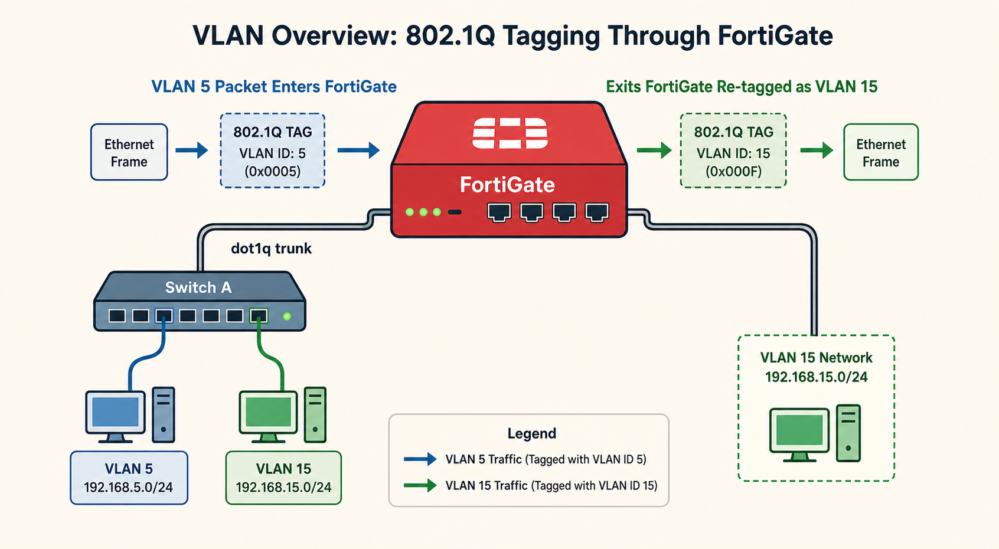
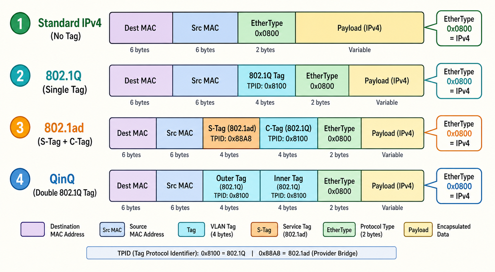
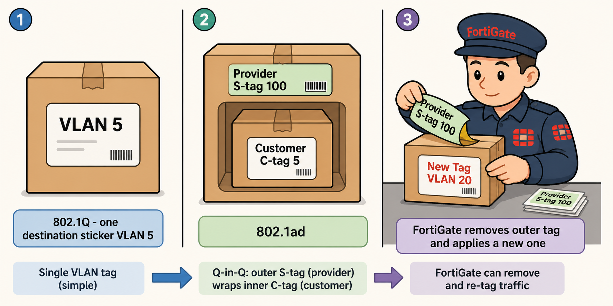
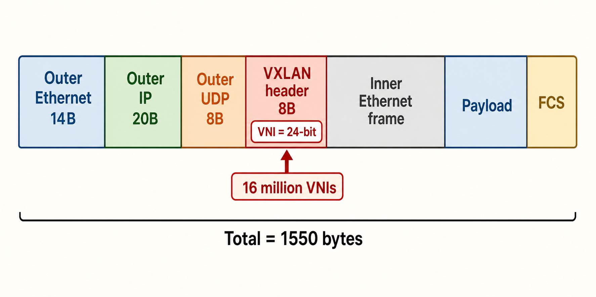
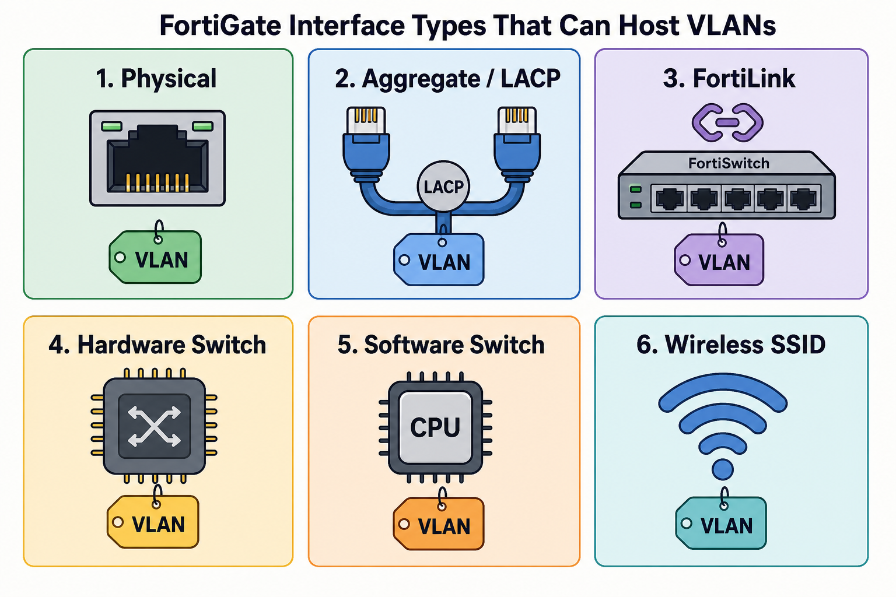
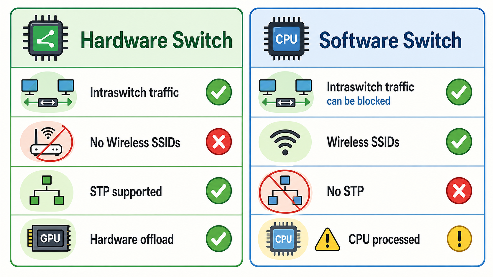

Master VLAN tagging standards, trunk links, and every interface type FortiGate supports — the foundation for all layer-2 segmentation questions on the EF-NSE7 exam.
VLANs are the first line of segmentation — get the tagging model wrong and nothing works.
This subtopic covers VLAN standards (802.1Q, 802.1ad, VXLAN), tagging behavior on FortiGate, and the six interface types that host VLANs.
💭THINK FIRST · VLAN OVERVIEW
A VLAN is a logical broadcast domain that exists independently of physical cabling. FortiGate acts as a Layer 3 device and can route between VLANs — but it does not add VLAN tags on ingress. That job belongs to the upstream switch.
What is the difference between a VLAN access port and a trunk (dot1q) port, and which side of FortiGate faces which?
If FortiGate removes an incoming VLAN tag and rewrites it with a different tag on egress, what device responsibility is FortiGate taking on — and what does that imply about routing?
Q1 — MODEL ANSWER
An access port carries a single untagged VLAN and is used toward end devices; a trunk port carries multiple tagged VLANs between network devices. In a typical enterprise design, FortiGate's internal interface connects to the switch via a dot1q trunk, and the switch's downlinks to hosts are access ports. FortiGate receives tagged frames on its VLAN sub-interfaces, one per VLAN.
Q2 — MODEL ANSWER
FortiGate is performing Layer 3 inter-VLAN routing. When it removes a VLAN 5 tag and rewrites it as VLAN 15, it has made a routing decision between two different IP subnets. This confirms a Layer 3 device role: stripping the incoming tag (ingress), performing route lookup and policy match, then adding the outgoing tag (egress). The downstream switch simply removes the outgoing tag on the final access port.
SECTION 01
VLAN Overview and Broadcast Domains

images/s1-vlan-overview.png
Flat colorful illustration: FortiGate device in the center connected to Switch A via a bold labeled "dot1q trunk" cable. Two hosts — one in VLAN 5 (blue, 192.168.5.0/24) and one in VLAN 15 (green, 192.168.15.0/24) — hanging off the switch. Arrows show packet flow: VLAN 5 tag enters FortiGate, exits re-tagged as VLAN 15. Pastel palette, bold outlines, minimal text labels, no shadows.
Inter-VLAN routing: FortiGate rewrites the VLAN tag at Layer 3, routing between broadcast domains.
A VLAN (Virtual LAN) is a logical subdivision of a network that segregates devices into separate broadcast domains. Devices in the same VLAN can communicate directly; devices in different VLANs require a Layer 3 routing decision — either via inter-VLAN routing or explicit firewall policy.
When more than one VLAN shares the same physical interface, that link is called a dot1q trunk link. In a typical campus design, FortiGate's internal interface connects to a managed switch via a trunk. The switch's downlinks to end hosts are untagged access ports. FortiGate receives the tagged frame on the appropriate VLAN sub-interface and routes it.
A key behavioral rule: FortiGate does not add VLAN tags on ingress. The upstream switch is responsible for tagging frames before they reach FortiGate. FortiGate removes the ingress tag, routes the packet, and adds the correct egress VLAN tag on the way out.
Exam gotcha: FortiGate removes the VLAN tag on ingress — it does NOT add tags on ingress. Only the upstream switch adds tags as frames arrive. If frames arrive untagged, FortiGate processes them on the parent physical interface, not a VLAN sub-interface.
🧠
MENTAL NOTE
FortiGate = Layer 3 device. It removes ingress VLAN tags and adds egress VLAN tags after a routing decision. The upstream switch handles ingress tagging for end-host traffic. Trunk link = multiple VLANs on one interface = dot1q.
ASK A QUESTION
ADD A NOTE
💭THINK FIRST · TAGGING STANDARDS
802.1Q allows up to 4,094 VLANs using a 12-bit VLAN ID. Service providers often need far more — so 802.1ad adds a second tag, creating a stacked VLAN frame. Understanding which EtherType corresponds to which standard is a common exam differentiator.
What is the EtherType value for 802.1Q, and how does 802.1ad differ in the number of tags it uses and the VLAN scale it supports?
When would you choose QinQ (802.1Q-in-802.1Q) over standard 802.1Q, and what is the practical VLAN count ceiling each supports?
Q1 — MODEL ANSWER
802.1Q uses EtherType 0x8100 and supports a single VLAN tag per frame, allowing up to 4,094 VLANs. 802.1ad (provider bridging) uses EtherType 0x88A8 for the outer S-tag and 0x8100 for the inner C-tag, stacking two tags to support up to 4,094 × 4,094 = ~16 million VLAN combinations. The outer tag identifies the service provider's network, the inner tag identifies the customer's VLAN.
Q2 — MODEL ANSWER
QinQ (802.1Q-in-802.1Q) uses two 0x8100 EtherType tags stacked, offering the same ~16M VLAN combination ceiling as 802.1ad but without the S-tag/C-tag distinction. You choose QinQ in large enterprise or service-provider networks when 4,094 VLANs is insufficient, or when you need to tunnel customer VLANs transparently across a provider backbone without the provider modifying inner tags.
SECTION 02
Ethernet Tagging Standards

images/s2-tagging-standards.png
Flat colorful illustration: four horizontal Ethernet frame diagrams stacked vertically — standard IPv4 (no tag), 802.1Q (one cyan tag labeled 0x8100), 802.1ad (orange S-tag + cyan C-tag), and QinQ (two cyan tags). Each frame shows Dest MAC, Src MAC, EtherType fields in distinct pastel color blocks. Labels call out the EtherType hex values. Pastel palette, bold outlines, no shadows, educational infographic style.
Four Ethernet frame types from untagged IPv4 to double-tagged QinQ — each supporting a larger VLAN address space.
FortiGate VLAN interfaces support multiple Ethernet tagging standards, each identified by a specific EtherType value in the frame header.
Standard
EtherType(s)
Tags
Max VLANs
Use case
802.1Q
0x8100
1
4,094
Enterprise LAN standard
802.1ad
0x88A8 (S-tag) + 0x8100 (C-tag)
2
~16 million
Service provider bridging
QinQ (802.1Q-in-802.1Q)
0x8100 (outer) + 0x8100 (inner)
2
~16 million
Large enterprise / SP tunneling
On the FortiGate GUI (Network > Interfaces > New Interface), you select either 802.1Q or 802.1AD as the VLAN protocol when creating a VLAN sub-interface. Layer 2 switches can add or remove tags but cannot modify them; only Layer 3 devices like FortiGate can modify the VLAN tag during routing.
Exam tip: Know the EtherType values. 0x8100 = 802.1Q (single tag, 4k VLANs). 0x88A8 = 802.1ad S-tag (provider tag). 0x0800 = plain IPv4 (no VLAN). These appear in frame-analysis scenarios.
VLAN tags on Ethernet frames work like address labels on nested shipping packages.
802.1Q tag (0x8100) — the outer shipping label: "deliver to building 5, room 15" — one destination identified
802.1ad S-tag + C-tag — like a freight forwarder's label wrapped around a customer label: the provider routes by S-tag; the customer's C-tag is preserved inside and only revealed at delivery
Layer 3 modification (FortiGate) — the customs officer who replaces the outer label with a new destination after inspecting the contents

📷 images/a1-vlan-nested-packages.png — add this image to the folder
Cartoon illustration in pastel style: three scenes side by side. Scene 1: a simple labeled box (802.1Q — one destination sticker "VLAN 5"). Scene 2: a box inside a bigger box — outer box has a freight label "Provider S-tag 100", inner box has "Customer C-tag 5" visible through a window (802.1ad). Scene 3: a customs officer (FortiGate, labeled in red) peeling off the outer sticker and applying a new one. Bold outlines, flat colors, short text labels, no shadows, educational infographic feel.
ASK A QUESTION
ADD A NOTE
💭THINK FIRST · VXLAN
VXLAN solves a fundamental limitation of 802.1Q: 4,094 VLANs are not enough for large data centers and cloud environments. Instead of inserting tags into the Ethernet frame, VXLAN encapsulates the entire original frame inside a UDP packet.
What UDP port does VXLAN use, and why does tunneling over UDP allow VXLAN to overcome the 4,094 VLAN limit of 802.1Q?
In what scenarios would you choose VXLAN over 802.1Q or 802.1ad?
Q1 — MODEL ANSWER
VXLAN uses UDP port 4789. The VXLAN header contains a 24-bit VNI (VXLAN Network Identifier), which supports up to 16 million virtual networks — far exceeding 802.1Q's 12-bit limit of 4,094. Because VXLAN runs over IP/UDP, it can traverse any routed network, not just Layer 2 domains — making it ideal for multi-site data centers.
Q2 — MODEL ANSWER
Choose VXLAN in data centers and cloud environments where you need more than 4,094 segments, or where the network spans multiple Layer 3 boundaries (e.g., across WAN links or different data center sites). Traditional VLAN standards are limited to Layer 2 domains and can't extend across routed infrastructure without tunneling.
SECTION 03
VXLAN — Network Virtualization and Scalability

images/s3-vxlan-encap.png
Flat colorful illustration: horizontal frame diagram showing a VXLAN encapsulated packet. Left-to-right blocks in distinct pastel colors: "Outer Ethernet 14B" (blue), "Outer IP 20B" (green), "Outer UDP 8B" (orange), "VXLAN header 8B" (red, labeled "VNI = 24-bit"), "Inner Ethernet frame" (grey), "Payload" (light blue), "FCS". Total = 1550 bytes labeled below. An arrow points to the VXLAN header block with "16 million VNIs". Bold outlines, no shadows, educational style.
VXLAN wraps the original frame inside UDP, adding outer headers — total encapsulated size is 1,550 bytes.
VXLAN (Virtual Extensible LAN) is a network virtualization protocol that encapsulates the original Ethernet frame within a UDP packet, unlike 802.1Q and 802.1ad which insert tags directly into the Ethernet frame header.
VXLAN uses UDP port 4789 by default. The VXLAN header contains a 24-bit VNI (VXLAN Network Identifier), supporting up to 16 million virtual networks — versus 4,094 for 802.1Q. The original Ethernet frame remains intact as inner headers, while new outer Ethernet, IP, and UDP headers enable the frame to traverse any routed IP network.
VXLAN is primarily used in data center and cloud environments where VLAN scalability limits are a real constraint, and where network segments must extend across multiple Layer 3 boundaries.
Key advantage: Because VXLAN tunnels over IP/UDP, it can span routed networks — including WAN and multi-site data centers — without requiring Layer 2 adjacency between endpoints. This makes it far more scalable than traditional VLANs for cloud-scale deployments.
🧠
MENTAL NOTE
VXLAN = UDP port 4789, 24-bit VNI = 16 million virtual networks. Unlike 802.1Q (tag in frame), VXLAN encapsulates the full original frame inside UDP. Use it in data centers and cloud environments where 4,094 VLANs is insufficient.
ASK A QUESTION
ADD A NOTE
💭THINK FIRST · INTERFACE TYPES
FortiGate is not limited to placing VLANs only on physical interfaces. You can configure the same VLAN ID on multiple different interface types — and they will be completely independent broadcast domains with different names.
Name three interface types in FortiGate that can host VLAN sub-interfaces beyond the standard physical interface.
What happens if you configure VLAN ID 5 on two different FortiGate interfaces — are they the same broadcast domain or different?
Q1 — MODEL ANSWER
Beyond physical interfaces, FortiGate can host VLANs on: aggregate (802.3ad LACP) interfaces, FortiLink interfaces (for FortiSwitch), hardware switch interfaces, virtual VLAN switch interfaces, software switch interfaces, and wireless SSID interfaces. This flexibility lets you apply VLANs across virtually any FortiGate connectivity method.
Q2 — MODEL ANSWER
They are completely different broadcast domains, even though the VLAN ID is the same. The VLAN ID only has meaning within the context of its parent interface. Two interfaces with VLAN 5 configured will have different names, different IP addresses, and separate broadcast domains — the VLAN ID is reused but isolated.
SECTION 04
VLANs on FortiGate Interface Types

images/s4-interface-types.png
Flat colorful illustration: six icon cards arranged in a 2×3 grid, each representing a FortiGate interface type that can host VLANs: Physical (network plug icon), Aggregate/LACP (two cables merged), FortiLink (switch icon with FortiSwitch label), Hardware Switch (chip icon), Software Switch (CPU icon), Wireless SSID (wifi waves). Each card has a pastel background, bold label, and a small VLAN tag icon. No shadows, educational infographic style.
VLANs can be configured on six different FortiGate interface types — not just physical ports.
FortiGate supports VLAN configuration on the following interface types:
Physical interfaces — the standard case; VLAN sub-interfaces on a physical port
Aggregate interfaces (802.3ad LACP) — bond multiple ports for bandwidth and redundancy, then place VLANs on top
FortiLink interfaces — for FortiSwitch management; VLANs created via WiFi & Switch Controller > FortiSwitch VLANs appear here
Hardware switch — multiple ports share one broadcast domain; VLANs placed on the switch interface
Software switch — software-based switching including wireless SSIDs
Wireless SSID interfaces — Wi-Fi SSIDs can be assigned a VLAN ID
A critical concept: the same VLAN ID can exist on different interfaces with different names, resulting in completely different broadcast domains. The VLAN ID is local to the parent interface — it is not globally unique on the FortiGate.
Exam tip: For FortiSwitch VLANs, always create them via WiFi & Switch Controller > FortiSwitch VLANs — this is the recommended method. Once created, they appear under the FortiLink interface in Network > Interfaces. Do not manually create VLAN sub-interfaces under FortiLink.
🧠
MENTAL NOTE
6 interface types support VLANs: physical, aggregate, FortiLink, hardware switch, virtual VLAN switch, software switch (+ wireless SSIDs). Same VLAN ID on two different interfaces = two different broadcast domains. VLAN ID is NOT globally unique on FortiGate.
ASK A QUESTION
ADD A NOTE
💭THINK FIRST · HW VS SW SWITCHES
Hardware and software switches both create shared broadcast domains across multiple ports, but they differ in how they process traffic, what models support them, and whether wireless SSIDs can be members.
Hardware switches support STP but not wireless SSIDs; software switches support wireless SSIDs but not STP. What operational impact does each limitation have in a real network?
What is the performance difference between hardware and software switches, and when would you explicitly avoid using a software switch?
Q1 — MODEL ANSWER
Without STP, a software switch is vulnerable to Layer 2 broadcast loops if you connect redundant paths between switches — you must carefully avoid redundant L2 paths. Without SSID support, a hardware switch cannot bridge wired ports with a wireless interface in the same broadcast domain — you'd need a software switch or VLAN policy to unify wired and wireless users.
Q2 — MODEL ANSWER
Hardware switches offload packet processing to dedicated hardware ASICs/SPUs, preserving CPU headroom. Software switches process all traffic in software via the CPU, which can degrade performance at high throughput or in resource-intensive inspection modes. Avoid software switches in high-traffic environments or on FortiGate models with limited CPU headroom.
SECTION 05
Hardware vs. Software Switches

images/s5-hw-sw-compare.png
Flat colorful illustration: two-panel side-by-side comparison. Left panel: "Hardware Switch" — chip icon, labeled features: Intraswitch traffic (green check), No Wireless SSIDs (red X), STP supported (green check), Hardware offload (GPU chip icon). Right panel: "Software Switch" — CPU icon, features: Intraswitch traffic (green check, note "can be blocked"), Wireless SSIDs (green check), No STP (red X), CPU processed (warning icon). Bold outlines, pastel colors, clear labels, no shadows.
Hardware switches offload to ASICs; software switches use the CPU — the key performance and feature tradeoff.
Both hardware and software switches create a shared broadcast domain across multiple FortiGate ports, overcoming the default one-broadcast-domain-per-interface limitation. The CLI configuration commands differ significantly.
FortiGate CLI — Hardware Switch
config system virtual-switch
edit "Hardware Switch"
set physical-switch "sw0"
config port
edit port1
next
edit port2
next
edit port3
next
end
next
end
config system interface
edit "Hardware Switch"
set vdom "root"
set ip 10.10.10.254 255.255.255.0
set allowaccess ping https
next
end
FortiGate CLI — Software Switch
config system switch-interface
edit "Software Switch"
set vdom "root"
set member "port1" "SSID" "port3"
set intra-switch-policy implicit
next
end
config system interface
edit "Software Switch"
set vdom "root"
set ip 10.10.10.254 255.255.255.0
set allowaccess ping https
next
end
Key differences to memorize:
Feature
Hardware Switch
Software Switch
CLI command
config system virtual-switch + config port
config system switch-interface + set member
Intraswitch traffic
Always on
On by default; can be blocked with explicit policy
Wireless SSIDs
Not supported
Supported
STP
Supported
Not supported
Model support
Specific models only
All models
Processing
Offloaded to hardware
CPU (software)
Exam gotcha: 802.1ad (provider bridging) is NOT the same as 802.3ad (LACP/link aggregation). These are frequently confused. 802.1ad = double VLAN tagging. 802.3ad = port bundling for bandwidth and redundancy.
🧠
MENTAL NOTE
Hardware switch = config system virtual-switch, config port subcommand, STP yes, SSIDs no, hardware-offloaded. Software switch = config system switch-interface, set member, STP no, SSIDs yes, CPU-processed. Software switch intraswitch policy can be explicit (requires firewall policies).